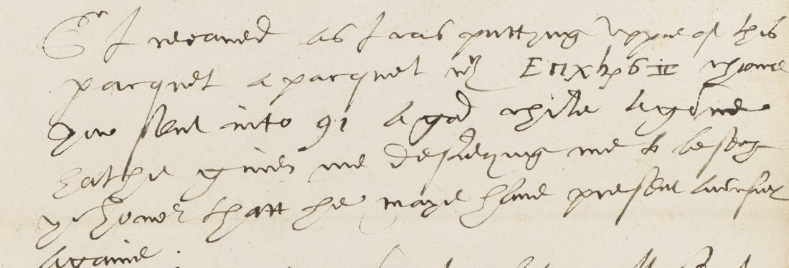

. Wikimedia Commons, public domain.")

Summary. DECODE lists R8504, with no decryption, as a cipher letter of “Sr. Ed. Stafford to unknown recipient”, London, 9 November 1586, with alphabet, graphic-sign and numerical ciphers. The two images show one page of clear English in Stafford’s hand, signed “E Stafford”, and a blank leaf. The only cipher is one word of seven signs on the second line. Stafford’s cipher with Walsingham had already been rebuilt here from a contemporary decipherment and glosses in the same volume (see Stafford, 20 August 1586). With that key the word deciphers as princes: “a paquet with princes from your honor”. Five of the seven signs take their values straight from the key. The other two (an r-form and rho) are inferred from the word itself. No other English word fits the pattern p?in?es. The letter is not in the Calendar of State Papers Foreign, which prints a different letter of the same day from Stafford to Burghley.
01 The document
f. 76r: Stafford’s holograph. About sixteen lines of clear English, a subscription and the signature “E Stafford”. f. 76v/77: blank, with show-through. No address or endorsement survives on the images, so the recipient is not named. The letter says “your honor”, and its siblings R8500–R8503 in the same volume are addressed to Walsingham, which makes him the probable recipient. DECODE’s “London” is where the manuscript is held. Stafford was ambassador in Paris. The clear text opens:

Sr, I receaved as I was puttinge penne to this paquet a paquet wth [E Π x h ρ 6 II] from your honor sent into …
02 The decipherment
| sign | E | Π | x | h | ρ | 6 | II |
|---|---|---|---|---|---|---|---|
| value | p | r | i | n | c | e | s |
| source | key | context | key | key | context | key | key |
Decipherment: princes. Grade: C for the two context signs, H for the rest. There is one cipher word and it is deciphered, so no gaps remain.
03 Sources
- British Library, Harley MS 1582 ff. 76–77; images on DECODE R8504 (login).
- Key: Stafford, 20 August 1586, rebuilt from the f. 72r decipherment (R8501) and the f. 73r glosses (R8502).
- Calendar of State Papers Foreign, Elizabeth, vol. 21 pt 1, November 1586 1–15 (British History Online, pp. 123–146): Stafford to Burghley, 9 Nov (SP 78); this letter not calendared.
Notes, transcription and profile: harley1582r8504/.